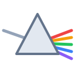

PrismSoftware rasterizer · Rust
Prism is a 3D rendering pipeline written from scratch in Rust. No GPU, no graphics crates. Just a framebuffer, a z-buffer, and barycentric math turning vertices into pixels.
cargo run -- render -o out.ppm
drag to orbit · rasterized on the CPU, per pixel
Use the Simulation dropdown to switch scenes, from the CPU-rasterized rotating cube to boids, Game of Life, and more. On the cube, drag to orbit the camera, toggle Wireframe to see the triangles, use Play/Pause to freeze it, and the Speed slider to change the rotation rate. Everything is drawn per pixel in your browser, the same pipeline as the Rust renderer.
Each triangle walks the bounding box of its three screen-space vertices. For every pixel center, three edge functions decide whether the point lies inside; their signed ratios are the barycentric weights.
Those same weights interpolate depth across the face, so every covered pixel arrives at the depth test with a z of its own.
let l0 = w0 / area;
let l1 = w1 / area;
let l2 = w2 / area;
let z = l0 * v0.z
+ l1 * v1.z
+ l2 * v2.z;
fb.set_with_depth(x, y, z, color);
One depth value per pixel, holding the nearest surface drawn so far. A fragment writes color only if it is closer, so triangles behind others are hidden regardless of the order they were submitted in.
One subcommand renders the built-in demo scene, a rotated, lit cube, and writes it as a binary PPM. No image codec, no runtime dependencies beyond clap. The output is just a header and raw bytes, so its size is checkable by hand.
$ cargo run -- render -o out.ppm wrote out.ppm (640x480) $ cargo run -- render -o wide.ppm --width 800 --height 600 wrote wide.ppm (800x600) $ ls -l out.ppm -rw-r--r-- 921615 out.ppm # 640 * 480 * 3 + 15-byte header $ head -c 15 out.ppm | xxd 50 36 0a 36 34 30 20 34 38 30 0a 32 35 35 0a P6.640 480.255.
Every stage, by hand
Model to world to camera to clip space through a chain of hand-written 4x4 matrices: rotation, look_at, and a right-handed perspective.
Divide by w to land in normalized device coordinates in [-1, 1], then map linearly to pixel coordinates and the z-buffer depth range.
Walk each triangle's bounding box. Three edge functions per pixel decide inside from outside, and their signed ratios are the barycentric weights.
One depth per pixel. set_with_depth commits a color only when the incoming depth is nearer, so overlaps resolve regardless of draw order.
A dot product between the world-space face normal and a fixed light direction sets each triangle's brightness. One tone per face.
A text header then width times height times three raw RGB bytes, row-major from the top. No compression, no metadata, checkable by byte length alone.
Prism is a teaching-grade software rasterizer, not a renderer to ship a game on. It trades speed for a pipeline you can read.
The classic path for learning software rendering, usually in C++. Prism is in that spirit: a full pipeline read end to end, written from scratch in Rust with the transforms and z-buffer by hand.
Runs these same steps in hardware: fast, parallel, and opaque. Prism does vertex transform, rasterization, depth test, and shading in plain CPU code so each step is visible instead of hidden behind a driver.
The readable middle. Real perspective transforms, per-pixel barycentric fill, a per-pixel z-buffer, flat directional shading, and a PPM writer, with clap as the only dependency. The same engine runs live in the browser demo above.